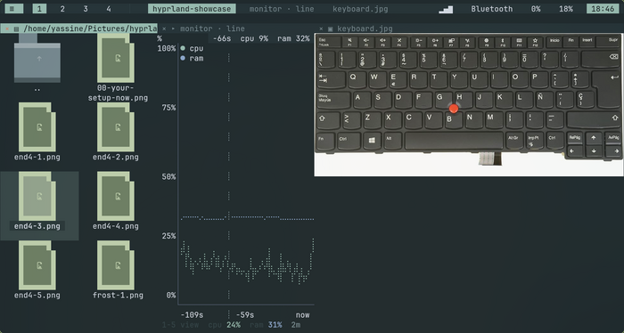
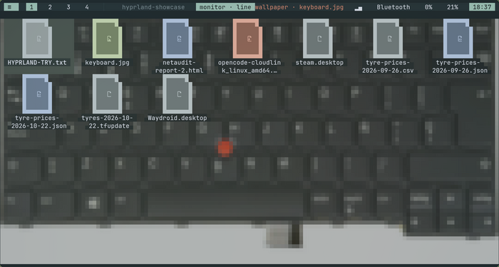
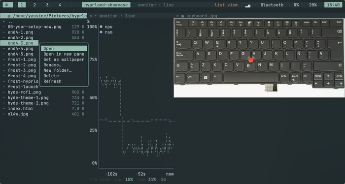

alpha · no desktop · no compositor · one terminal
Split tree, directional focus, workspaces — the things you miss when you go back to tmux — on top of real image panes, web pages, and any TUI you already use.

There are two good answers to “how do I arrange my work”, and both stop short.
termland sits in the gap. A window manager whose windows are terminal programs: a real split tree with directional focus and workspaces, on top of ptys, with pane types the multiplexers don’t have. It starts from a single kitty window — no session manager, no compositor, nothing boot-critical to install.
Binary dwindle split tree. auto_dir cuts the long side of the focused pane.
Closing collapses the parent and promotes the sibling — the tree never holds a one-child node.
By geometry, not tree order: among panes on the correct side, the closest one along the travel axis, then the smallest perpendicular offset.
Kitty graphics with Unicode placeholders, falling back through sixel, iTerm2 and halfblocks. An image pane is a leaf like any other — it splits, zooms and closes the same way.
A w3m pane, because a 1920×1080 terminal has more usable columns than you think.
Every action is a tlc command over a unix socket. tlc keys "make\r"
types into the focused pane like a person would.
No attach/detach, no persistence layer, no server. termland is the session; children get SIGHUP when the pty master closes.


The leader is Ctrl+Space — the only chord it keeps for itself.
| v | | split side-by-side | s - | split stacked |
| hjkl | focus left / down / up / right | HJKL | resize that edge |
| Tab ] | next pane | [ | previous pane |
| n | new shell | i | new image pane |
| w | new web pane | f z | zoom / unzoom |
| q x | close pane | ? | keymap overlay |
| 1…9 | switch workspace | Space | send a literal Ctrl+Space |
One tab-separated line per request. No JSON, no quoting rules.
# cut the focused pane left|right tlc split v # new pane running anything tlc run btop tlc image ~/Pictures/a.png tlc web https://example.com # type into the focused pane — \r \t \e are escapes tlc keys "make test\r" # chain them like a window manager tlc focus l && tlc zoom # ask it things tlc list
The socket lives at $XDG_RUNTIME_DIR/termland.sock,
so plain nc works too.
tlc itself has
zero dependencies — it is the scriptable surface of the
window manager, so it must build and run anywhere, instantly.
Four ideas the rest of the code follows from.
termland owns the ptys, so when it exits the children get SIGHUP as the
master closes. That deletes an entire category of bug — and most of the code a
multiplexer normally needs.
Pane readers push bytes into a single channel; input events use the same channel.
The loop is recv, batch, draw. No locks in the hot path, and a chatty
pane can’t starve the renderer.
KeyEvent goes back out as the xterm sequence the child expects —
including ESC[1;{m} modifiers and the ESC O vs
ESC[15~ split between F1–F4 and F5–F12. Pure, tested, no ambiguity.
Not xterm-kitty. A pane is a pane; a program inside one must not decide
it can draw over the entire screen.
Linux, Rust 1.80+, a C toolchain, and kitty. One apt line.
# dependencies sudo apt install kitty build-essential pkg-config # build + install git clone https://github.com/beav0team/termland && cd termland cargo build --release install -Dm755 target/release/termland ~/.local/bin/termland install -Dm755 target/release/tlc ~/.local/bin/tlc install -Dm755 contrib/tl ~/.local/bin/tl install -Dm644 contrib/kitty.conf ~/.config/termland/kitty.conf # run tl --demo
Uninstall is a deletion. No system files, no boot changes,
no service units. Remove ~/Documents/termland,
~/.config/termland and the three
binaries, and nothing is left behind.
The end goal is a Linux distribution whose front end this is.
Not a window manager you install on top of a desktop — the thing you are looking at after you log in, and the thing on the screen of the live ISO. That deletes the whole stack between the kernel and your programs:
today firmware → kernel → DRM/KMS → compositor → toolkit → apps
↑ greeter → session → shell
goal firmware → kernel → DRM/KMS → termland → ptys → programs
↑ login, or nothing at all
Every layer that gets deleted becomes termland's job. kitty is the development host
for v0.1, not the shipping
target — a distro cannot tell you to install a terminal emulator first.
The model works: split tree, ptys, image panes, IPC. kitty already speaks the graphics protocol, so the core can be proven before the frontend exists.
Login under greetd, then a
surface trait so the frontend is
swappable and images become textures instead of escape codes.
wgpu +
glyphon under
cage, bundled fonts and config,
then an ISO that boots straight into it.
The hard problems are not the renderer. Input methods —
Arabic, Chinese, Japanese — need text-input-v3
or a direct IM protocol, because without them the distro cannot be typed into.
Screen readers hook AT-SPI, which hooks toolkits, and being the terminal means being the
toolkit. Clipboard and drag-and-drop stop being free the moment there is no compositor.
Those decide whether this is a usable desktop or a beautiful demo.
Deliberately not here yet: scrollback paging, mouse selection and copy, session persistence, a command palette, X11 apps.